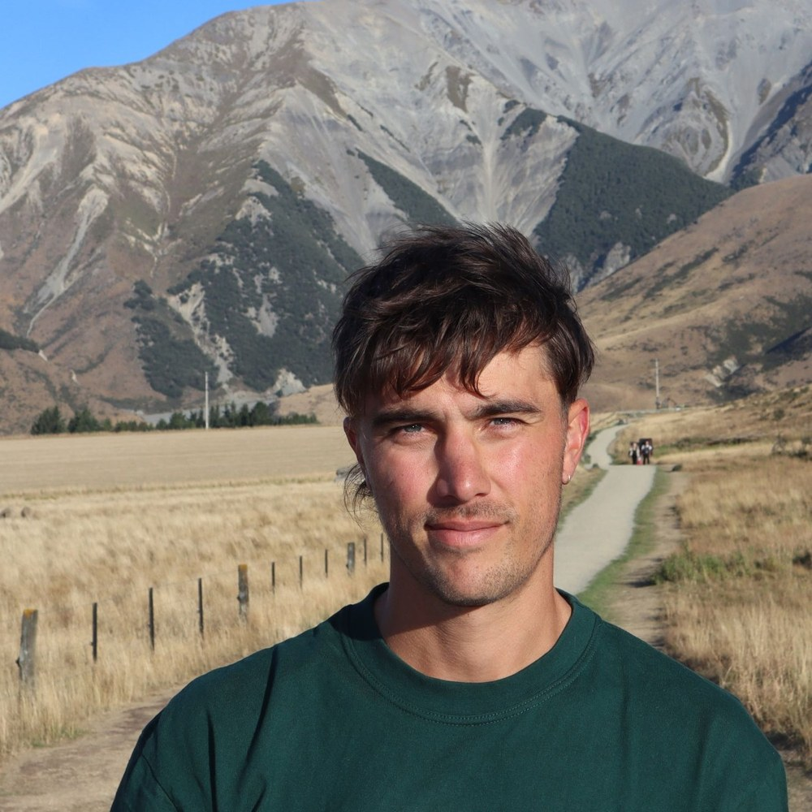

Headshot';">Joe Mayne
Creator, storyteller, digital marketing expert and sustainability enthusiast.
I'm Joe. I tackle complicated things and turn them into stories, strategies and processes that make an impact. I see challenge as opportunity and aim to leave everything, every person and every place I encounter improved by my presence, or no trace at all!
Select recent and notable projects
I'm a Bristol-based, sustainability-minded senior marketer who lives at the crossroads of strategy, storytelling, action and enhancement. I'll define the positioning, build the campaign, design the asset, set up the workflow and report back on what actually worked. Sometimes all at once. I've spent over a decade honing my marketing skillset and for the last seven years I've been deep in the climate and sustainability sector, though it's been a whole lifetime of living sustainably. I take genuinely complex products and ideas such as AI-enabled tools, carbon accounting platforms, ESG frameworks etc. and make them make sense to the people who need to know. Whether they're the ones buying or selling!
I'm currently exploring new opportunities in marketing leadership, particularly with sustainability and purpose-driven organisations.
I worked closely with Joe for more than two years on major digital and marketing transformation projects. He is a strategic leader who excels at connecting business goals, customer experience, and technology to deliver meaningful results. Joe has a unique ability to align stakeholders, simplify complex challenges, and drive execution across cross-functional teams. His expertise in digital strategy, marketing technology, analytics, and customer experience, combined with his collaborative leadership style, makes him an exceptional partner for any organization navigating digital change.— Courtney O'Daniel
Needs your input — add a third real quote here.